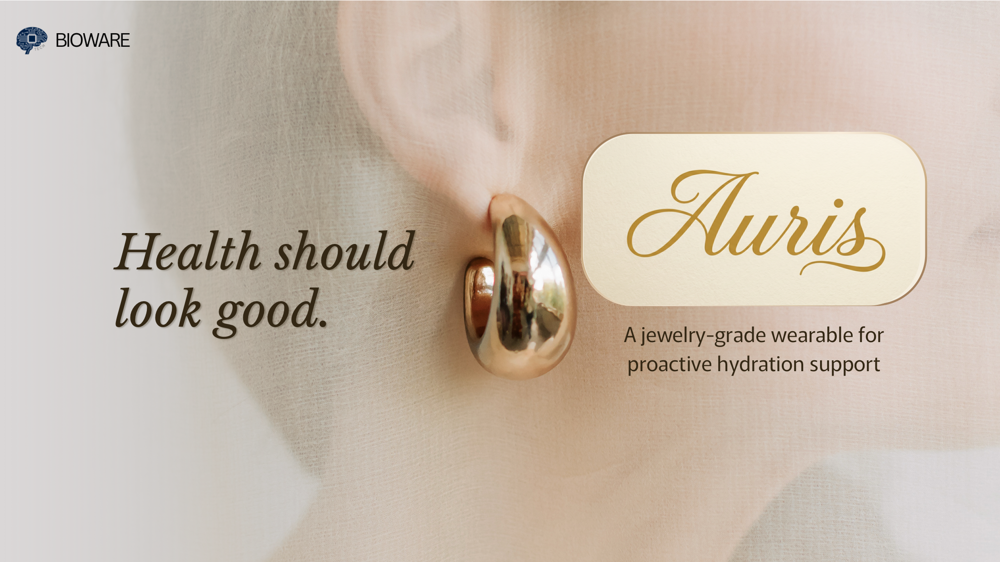

Wearable Study Research
CalmingMoments, now CalmingBeats
An early wearable anxiety-support project exploring real-time detection and calming haptic feedback.
Visit CalmingBeatsPortfolio

About
Designer, researcher, and maker working across machine learning for health, wearable systems, and creative making through knitting and crochet.
I’m interested in how technical systems can feel more human, how interfaces support real lives, and how making by hand shapes research and design thinking.
ResumeSection 01
Wearable Study Research
An early wearable anxiety-support project exploring real-time detection and calming haptic feedback.
Visit CalmingBeats
Startup Studio Project
A jewelry-grade wearable concept designed for proactive hydration support through an earring form factor.
Section 02

Published ML Research
A multimodal imaging project using deep neural networks to study autism-related axon pathology across microscopy, CT, and MRI images.
Read the paper
Pipeline Design
A preprocessing and windowing pipeline built to prepare microscopy and histopathology images for deep neural network input.

Interpretability Study
Grad-CAM and image-level analysis to understand which visual regions informed classification behavior.
Section 03
I am a fiber artist who has crocheted and knitted for 4 years, and more recently I've been expanding into weaving, sewing, and other material-led forms. Alongside personal making, I founded and organized crochet and knit socials through Fashion in Tech to make fiber practice more communal.
Selected works from crochet, knit, weaving, and collaborative making.
Selected Works
01 / 07